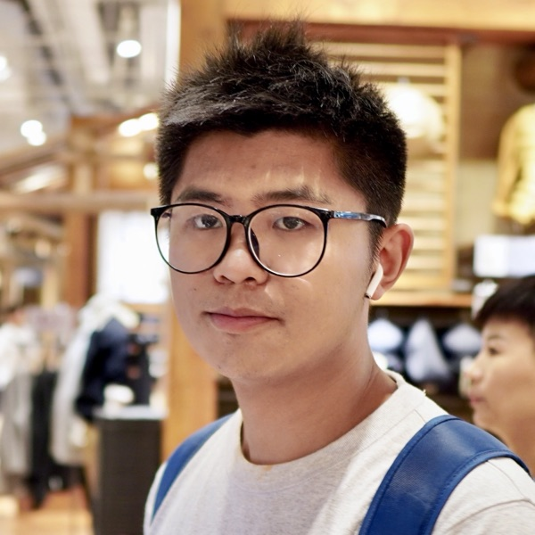

Principal Investigator
Prof. Zhou Yang
Assistant Professor
University of Alberta
Canada CIFAR AI Chair
Amii Fellow
Zhou Yang is an Assistant Professor in the Department of Computing Science at the University of Alberta, a Canada CIFAR AI Chair, and an Amii Fellow. He completed his Ph.D. at Singapore Management University in early 2025, after earning an MSc from University College London. He previously served as a senior research engineer at the Centre for Research on Intelligent Software Engineering.
His research establishes scientific and practical foundations for trustworthy code LLMs, integrating robustness, security, privacy, ecosystem understanding, and efficiency to support safer AI adoption in software engineering. He has received multiple major awards, including the 2026 MSR Outstanding Doctoral Research Award, the 2025 ACM SIGSOFT Outstanding Doctoral Dissertation Award, and the 2024 IEEE Computer Society Best Paper Award.